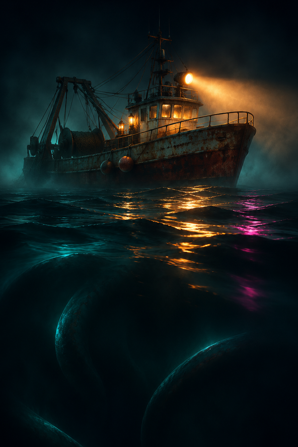

DREADMOOR, la pesca che fa paura

· Redazione BENDREX
Il motore borbotta, il primo pesce è a bordo. Poi cala la luce e capisci che sotto la superficie non sei solo: qualcosa ti guarda, e non è un pesce. DREADMOOR parte da qui, da una barca che di giorno è un lavoro e di notte diventa un posto da cui vorresti essere altrove.
È un'avventura di pesca in prima persona, single-player, con l'horror che sale piano invece di arrivare subito. Lo sviluppa Dream Dock, lo pubblica Digital Vortex Entertainment; è disponibile su Steam in accesso anticipato (early access) dal 9 novembre 2026, solo su PC Windows. Su Steam ha "Molto positive" con 616 recensioni al 10/11/2026, mentre la stampa è più divisa: sono dati del negozio e delle testate, non un giudizio nostro.
Un gioco di pesca horror, non un simulatore di lenza
Il loop è chiaro: trovi lo spot, scegli l'esca, tiri su il pesce, lo sezioni e lo vendi ai mercanti delle Terre Sommerse. Le specie rare e pericolose pagano di più, e le creature si divorano tra loro: il mare cambia anche quando non ci sei.
Intorno alla canna c'è un trawler da potenziare pezzo per pezzo — motore, elica, scafo, taniche, faro, postbruciatore — e scontri in tempo reale, in mare e a terra, con spedizioni notturne. Chi ha amato DREDGE qui trova più gestione e più rischio.
Cosa c'è già e cosa arriverà con la 1.0
L'accesso anticipato è dichiarato in 6–12 mesi, con roadmap esplicita. Oggi ci sono il loop completo, una regione e la storia; la 1.0 porterà nuove aree, nuovi pesci e nuove meccaniche.
Quanto costa
Il prezzo è di 20,49 €, ma lo sconto di lancio del 10% lo porta a 18,44 € fino al 23/11/2026: è un prezzo rilevato il 10/11/2026, indicativo e soggetto a variazioni, da aggiornare il 24/11. Esistono anche un Supporter Pack da 4,89 € e una Deluxe da 23,33 €; gli sviluppatori hanno dichiarato che il prezzo salirà con la 1.0.
Link diretto a Steam, nessuna affiliazione
Dreadmoor requisiti: PC Windows, 7 GB di spazio
Minimi: Intel Core i5-8400 o AMD Ryzen 5 2600, 8 GB di RAM, GeForce GTX 1060 da 6 GB, Windows 10 o superiore, 7 GB di spazio. Consigliati: i5-12400F o Ryzen 5 5600, 16 GB di RAM, RTX 4060. L'italiano c'è per interfaccia e sottotitoli; l'audio è solo in inglese e russo. Su Steam Deck lo stato è dichiarato "sconosciuto", quindi non diamolo per funzionante.
A chi può piacere: a chi vuole una pesca che chiede abilità e una barca da mandare avanti, e a chi sopporta un horror di attese più che di spaventi. Lo metti in wishlist o aspetti la 1.0? Scrivicelo nei commenti.